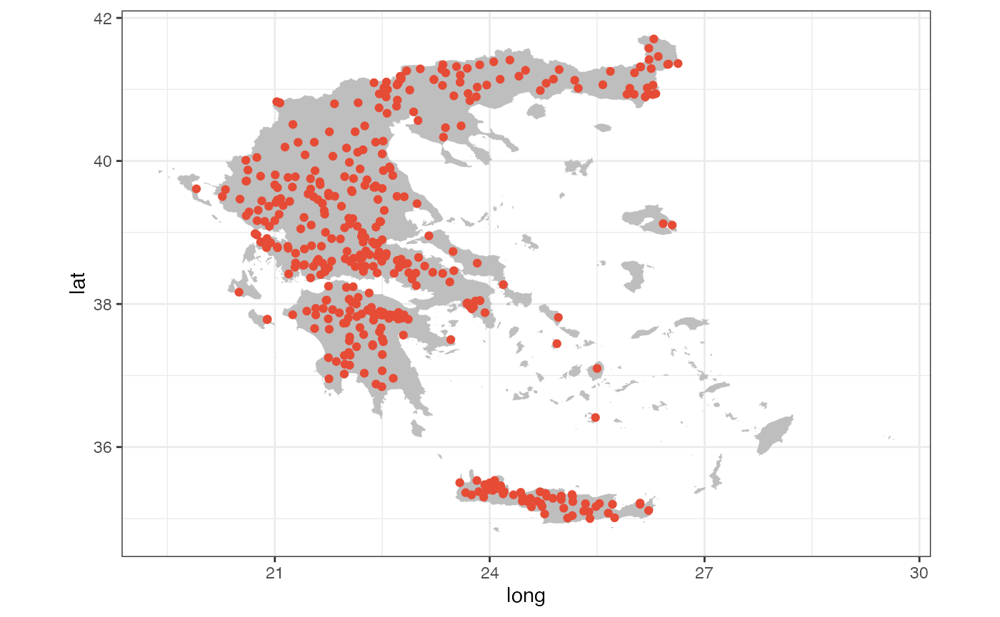
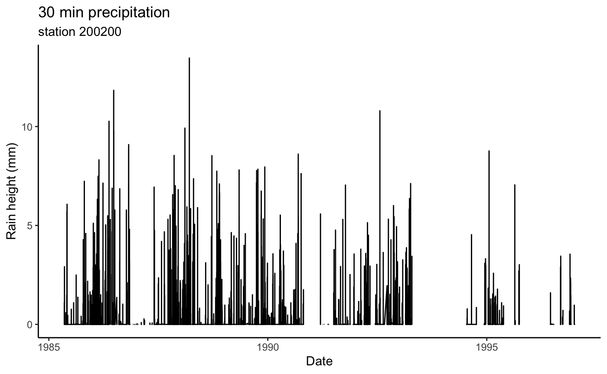

hydroscoper
Hydroscope is the Greek National Data Bank for Hydrological and Meteorological Information, a result of long-standing efforts by numerous Greek scientists in collaboration with various companies and associations. It was implemented in three phases, funded by the Ministry of Development, the Ministry of Environment and Energy and the European Union.
This National Data Bank provides several data sources from various organisations via a web interface. Each participating organisation keeps its data on its own server using a database system for the storage and management of information. These organisations are:
The above data are structured as tables and space separated text files, but are in Greek, thus limiting their usefulness. Another issue with Hydroscope is the lack of comprehensive look-up tables about the available data, which are spread across many different databases.
hydroscoper?hydroscoper provides functionality for automatic retrieval and translation of Hydroscope’s data to English. The main functions that can be utilized is the family of functions, get_stations, get_timeseries, get_data, etc., to easily download Hydroscope’s data as tibbles.
The package covers Hydroscope’s data sources using the Enhydris API. The Enhydris database is implemented in PostgreSQL and details about the database can be found here, and about the Web-service API here.
The internal datasets of the package can be used to run queries on the available Hydroscope’s stations and time series data, reducing the time needed for downloading and data wrangling, as these data are rarely modified. These datasets are:
stations
It is a comprehensive look-up table with geographical and ownership information of the available stations in all Hydroscope’s databases. The variables are:
station_id The station’s ID.name The station’s name.water_basin The station’s Water Basin.water_division The station’s Water Division.owner The station’s owner.longitude The station’s longitude in decimal degrees, ETRS89.latitude The station’s latitude in decimal degrees, ETRS89.altitude The station’s altitude, meters above sea level.subdomain The corresponding Hydroscope’s database.timeseries
It is also a look-up table with all the available measurements for a given station in a given Hydroscope’s database, with units of measurement and times of those measurements. The variables are:
time_id The time series ID.station_id The corresponding station’s ID.variable The time series variable type.timestep The timestep of time series.units The units of the time series.start_date The starting date of time series values.end_date The ending date of time series values.subdomain The corresponding Hydroscope’s database.Note that:
ypaat, emy and kyy sub-domains are maintained by the National Technical University Of Athens and these servers work seamlessly.deh sub-domain is maintained by the Greek Public Power Corporation and occasionally the server is down.This is a basic example which shows how to get the stations’ and time series’ data from the Hydroscope’s Ministry of Environment and Energy database, http://kyy.hydroscope.gr/.
Load libraries:
library(hydroscoper)
library(ggplot2)
library(tibble)We will use the package’s data stations and timeseries, to reduce the time needed with data munging. We can subset the station’s data for the kyy sub-domain with:
# load data
data("stations")
# subset stations data
kyy_stations <- subset(stations, subdomain == "kyy")
# view kyy stations
kyy_stations
#> # A tibble: 425 x 9
#> station_id name water_basin water_division owner longitude latitude
#> <int> <chr> <chr> <chr> <chr> <dbl> <dbl>
#> 1 501032 AG. BA… "KOURTALIOT… GR13 min_… NA NA
#> 2 200246 GEPH. … "ALPHEIOS P… GR01 min_… 22.0 37.5
#> 3 200237 TROPAIA "ALPHEIOS P… GR01 min_… 22.0 37.7
#> 4 200231 BYTINA "ALPHEIOS P… GR01 min_… 22.2 37.7
#> 5 200200 LYKOUR… "ALPHEIOS P… GR01 min_… 22.2 37.9
#> 6 200236 MEGALO… "ALPHEIOS P… GR01 min_… 22.1 37.4
#> 7 200244 ODOG. … "REMA CHORA… GR01 min_… 21.8 37.0
#> 8 200204 TRIPOT… "ALPHEIOS P… GR01 min_… 21.9 37.9
#> 9 200198 KASTEL… "ALPHEIOS P… GR01 min_… 22.0 37.9
#> 10 200239 PERDIK… "ALPHEIOS P… GR01 min_… 22.0 37.7
#> # ... with 415 more rows, and 2 more variables: altitude <dbl>,
#> # subdomain <chr>Let’s plot these stations using the package’s dataset greece_borders.
ggplot() +
geom_polygon(data = greece_borders,
aes(long, lat, group = group),
fill = "grey",
color = NA) +
geom_point(data = kyy_stations,
aes(x = longitude, y = latitude),
color = "#E64B35FF") +
coord_fixed(ratio=1) +
theme_bw()
#> Warning: Removed 11 rows containing missing values (geom_point).
To get the time series’ data for the station 200200 (http://kyy.hydroscope.gr/stations/d/200200/) we can use:
station_ts <- subset(timeseries, station_id == 200200)
station_ts
#> # A tibble: 4 x 8
#> time_id station_id variable timestep units start_date end_date subdomain
#> <int> <int> <chr> <chr> <chr> <chr> <chr> <chr>
#> 1 761 200200 wind_di… <NA> ° 1948-01-0… 1997-07… kyy
#> 2 56 200200 precipi… 30_minu… mm 1985-05-0… 1997-01… kyy
#> 3 760 200200 snow daily mm 1948-01-0… 1997-07… kyy
#> 4 759 200200 precipi… daily mm 1953-03-0… 2011-06… kyyWe can download the station’s precipitation time series 56 (http://kyy.hydroscope.gr/timeseries/d/56/):
ts_raw <- get_data(subdomain = "kyy", time_id = 56)
ts_raw
#> # A tibble: 147,519 x 3
#> date value comment
#> <dttm> <dbl> <chr>
#> 1 1985-05-06 08:00:00 0. 1
#> 2 1985-05-06 08:30:00 0. 1
#> 3 1985-05-06 09:00:00 0. 1
#> 4 1985-05-06 09:30:00 0. 1
#> 5 1985-05-06 10:00:00 0. 1
#> 6 1985-05-06 10:30:00 0. 1
#> 7 1985-05-06 11:00:00 0. 1
#> 8 1985-05-06 11:30:00 0. 1
#> 9 1985-05-06 12:00:00 0. 1
#> 10 1985-05-06 12:30:00 0. 1
#> # ... with 147,509 more rowsLet’s create a plot:
ggplot(data = ts_raw, aes(x = date, y = value))+
geom_line()+
labs(title= "30 min precipitation",
subtitle = "station 200200",
x="Date", y = "Rain height (mm)")+
theme_classic()